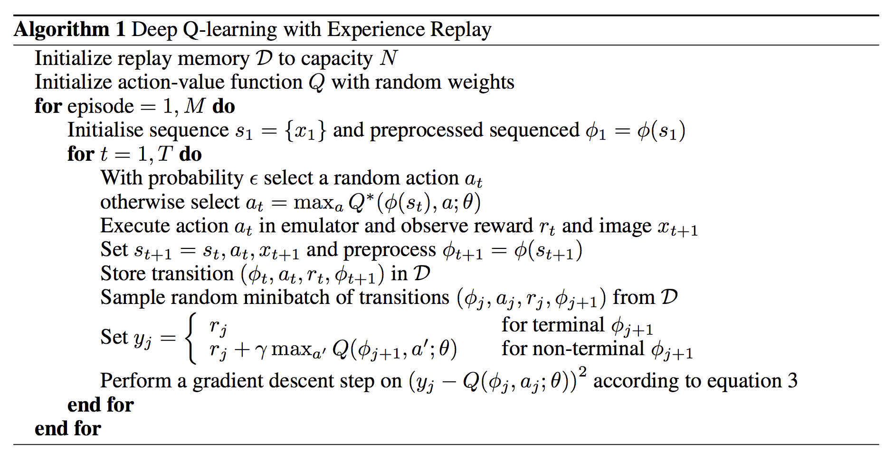

Middle-Term Report Break-out with DQN
Exprimental Environment
- Provided by the course
Theory
Q-Learning
Q-Learning is a model-free reinforcement learning algorithm. It is a model-free, off-policy TD control algorithm. It can be used to find the optimal action-selection policy for any given Markov decision process (MDP). It learns a policy, which tells an agent what action to take under what circumstances. It does not require a model (hence the connotation "model-free") of the environment, and it can handle problems with stochastic transitions and rewards, without requiring adaptations.
Q-Learning represents the action-value function as a table, with one row for each state and one column for each action. The value of each entry is the expected return starting from that state and taking that action, then following the policy thereafter. The policy is derived from the action-value function, by selecting the action with the highest expected return for each state.
| State | Action | Value |
|---|---|---|
| s1 | a1 | v1 |
| ... | ... | ... |
Howerver, the breakout game is a continuous state space, it's hard and inefficient to store the Q-table. So we use a neural network to approximate the Q-table. That is what we will introduce later.
Deep Q-Learning Network (DQN)
DQN use neural network to approximate the Q-table. Neural network can be regarded as a function approximator. It can approximate the Q-table. The input of the neural network is the state of the game, and the output is the Q-value of each action.
- Bellman Equation, which is the core of Q-Learning, is used to update the Q-value of each action.
- The neural network is trained by minimizing the loss function, which is the mean square error between the target Q-value and the predicted Q-value.
- -greedy policy is used to balance exploration and exploitation. The agent will choose the action with the highest Q-value with probability , and choose a random action with probability .
Experience replay
Since the game is a continuous state space, the agent will experience a lot of transitions. If we train the neural network with the transitions in order, the neural network will be biased. So we use experience replay to store the transitions and sample them randomly to train the neural network.
The agent will store the experience in a replay buffer, and randomly sample a batch of experience to train the neural network. The replay buffer is a queue, and the size of the queue is MEM_SIZE. The agent will sample a batch of experience with size batch_size from the replay buffer to train the neural network.
By using experience replay, the agent can learn from the experience in a random order, which can break the correlation between the samples. It can improve the stability of the training process.

Double DQN
People finds that DQN tends to overestimate the Q-value. This is because Q-value is estimated by the maximum value of next state. And the value of the next state is also overestimated. Step by step, the Q-value graually devate from the actual value.
Double DQN uses two neural networks to estimate the Q-value. One is used to select the action(target network), and the other(policy network) is used to estimate the Q-value. In this way, devation can be avoided.
Dueling DQN
Dueling DQN divides the Q-value into two parts: state value and action advantage. The state value is the value of the state , and the action advantage is the advantage of each action .

Implementation
main.py
main.py is the entry of the program. It will create the environment, the agent, and the replay buffer. Then it will start the training process.
First we define some hyperparameters.
GAMMAis is the discount factor.MEM_SIZEis the size of the replay buffer.STACK_SIZEis the number of frames stacked together to form a state.EPS_STARTis the initial value of .EPS_ENDis the final value of .EPS_DECAYis the decay rate of .BATCH_SIZEis the size of the batch sampled from the replay buffer.POLICY_UPDATEis the number of steps to update the policy network.TARGET_UPDATEis the number of steps to update the target network.WARM_STEPSis the number of steps to fill the replay buffer.`
GAMMA = 0.99 GLOBAL_SEED = 0 MEM_SIZE = 100_000 RENDER = False SAVE_PREFIX = "./models" STACK_SIZE = 4 EPS_START = 1. EPS_END = 0.1 EPS_DECAY = 1000000 BATCH_SIZE = 32 POLICY_UPDATE = 4 TARGET_UPDATE = 2000 WARM_STEPS = 1000 MAX_STEPS = 5000000 EVALUATE_FREQ = 10000
Then we initialize the random seed, computing devices, environment env, Agent agent and ReplayMemory memory
rand = random.Random() rand.seed(GLOBAL_SEED) new_seed = lambda: rand.randint(0, 1000_000) torch.set_num_threads(32) last = [] for dirpath, dirnames, filenames in os.walk(SAVE_PREFIX): last = [i for i in filenames if not i.endswith("mem")] break if len(last) == 0: print("No model found, creating new one.") os.makedirs(SAVE_PREFIX, exist_ok=True) torch.manual_seed(new_seed()) device = torch.device("cuda") env = MyEnv(device) agent = Agent( env.get_action_dim(), device, GAMMA, new_seed(), EPS_START, EPS_END, EPS_DECAY, BASIC_MODEL ) memory = ReplayMemory(STACK_SIZE + 1, MEM_SIZE, device) else: last = sorted(last)[-1] print(f"Loading model from {last}") BASE_COUNT = int(last.split("_")[1]) torch.manual_seed(new_seed()) device = torch.device("cuda") env = MyEnv(device) agent = Agent( env.get_action_dim(), device, GAMMA, new_seed(), EPS_START, EPS_END, EPS_DECAY, os.path.join(SAVE_PREFIX, last), ) memory = ReplayMemory(STACK_SIZE + 1, MEM_SIZE, device) memory.load(os.path.join(SAVE_PREFIX, last + ".mem"))
After that, we can start to train the agent.
The agent play games step by step. And when game finishes, the env will be reset and a new game starts.
for step in progressive: if done: observations, _, _ = env.reset() for obs in observations: obs_queue.append(obs)
training = true if running for WARM_STEPS, which means the network can start to train
training = len(memory) > WARM_STEPS
observe the current state, and get an action according to the state. Then make action to get new observation.
state = env.make_state(obs_queue).to(device).float() action = agent.run(state, training) obs, reward, done = env.step(action)
Then put the observation into the queue and memory buffer.
obs_queue.append(obs) memory.push(env.make_folded_state(obs_queue), action, reward, done)
The agent learn every POLICY_UPDATE steps.
if step % POLICY_UPDATE == 0 and training: agent.learn(memory, BATCH_SIZE)
The agent update the target network every TARGET_UPDATE steps.
if step % TARGET_UPDATE == 0: agent.sync()
The agent save the model every EVALUATE_FREQ steps.
if step % EVALUATE_FREQ == 0: avg_reward, frames = env.evaluate(obs_queue, agent, render=RENDER) with open("rewards.txt", "a") as fp: fp.write(f"Cur: {BASE_COUNT + step//EVALUATE_FREQ:03d} Reward: {avg_reward:.4f}\n") progressive.set_description(f"reward: {avg_reward:.4f}") if avg_reward < BEST_AWARD: continue BEST_AWARD = avg_reward progressive.write(f"\rSaving model with reward {avg_reward:.4f}") agent.save(os.path.join( SAVE_PREFIX, f"model_{BASE_COUNT + step//EVALUATE_FREQ:03d}")) memory.save(os.path.join( SAVE_PREFIX, f"model_{BASE_COUNT + step//EVALUATE_FREQ:03d}.mem")) if last_saved_mem != '': os.remove(os.path.join(SAVE_PREFIX, last_saved_mem))
utils_drl.py
Agent class is implemented in utils_drl.py. It contains the policy network, target network, optimizer, loss function, and other functions.
__init__ function initializes the model parameters.
def __init__( self, action_dim: int, device: TorchDevice, gamma: float, seed: int, eps_start: float, eps_final: float, eps_decay: float, restore: Optional[str] = None, ) -> None: self.__action_dim = action_dim self.__device = device self.__gamma = gamma self.__eps_start = eps_start self.__eps_final = eps_final self.__eps_decay = eps_decay self.__eps = eps_start self.__r = random.Random() self.__r.seed(seed) self.__policy = DQN(action_dim, device).to(device) self.__target = DQN(action_dim, device).to(device) if restore is None: print("Initialized weights.") self.__policy.apply(DQN.init_weights) else: print("Restored weights from", restore) self.__policy.load_state_dict(torch.load(restore, map_location=device)) self.__target.load_state_dict(self.__policy.state_dict()) self.__optimizer = optim.AdamW( self.__policy.parameters(), lr=0.0002, eps=1.5e-4, ) self.__target.eval() self.eval_mode = False
run function returns an action according to the current state. It uses epsilon-greedy policy to select the returned action.
def run(self, state: TensorStack4, training: bool = False) -> int: """run suggests an action for the given state.""" if training: self.__eps -= \ (self.__eps_start - self.__eps_final) / self.__eps_decay self.__eps = max(self.__eps, self.__eps_final) if self.eval_mode or (training and self.__r.random() > self.__eps): with torch.no_grad(): return self.__policy(state).max(1).indices.item() return self.__r.randint(0, self.__action_dim - 1)
learn function trains the policy network and update it by Back propagation
def learn(self, memory: ReplayMemory, batch_size: int) -> float: """learn trains the value network via TD-learning.""" state_batch, action_batch, reward_batch, next_batch, done_batch = \ memory.sample(batch_size) # evaluate the policy value values = self.__policy(state_batch.float()).gather(1, action_batch) # evaluate the target value if DQN_MODE == DQNMode.DOUBLE_DQN: # DOUBLE_DQN next_actions = self.__policy(next_batch.float()).max(1).indices values_next = self.__target(next_batch.float()).gather(1, next_actions.unsqueeze(1)) # elif DQN_MODE == DQNMode.DUELING_DQN: else: # NORMAL_DQN values_next = self.__target(next_batch.float()).max(1).values.detach() # compute the expected value expected = (self.__gamma * values_next.unsqueeze(1)) * \ (1. - done_batch) + reward_batch # loss value loss = F.smooth_l1_loss(values, expected) self.__optimizer.zero_grad() loss.backward() for param in self.__policy.parameters(): param.grad.data.clamp_(-1, 1) self.__optimizer.step() return loss.item()
sync and save function are used to update the target network and save the model.
def sync(self) -> None: """sync synchronizes the weights from the policy network to the target network.""" self.__target.load_state_dict(self.__policy.state_dict()) def save(self, path: str) -> None: """save saves the state dict of the policy network.""" torch.save(self.__policy.state_dict(), path)
utils_model.py
DQN class is implemented in utils_model.py. It contains the convolutional neural network and fully connected layers.
__init__ function initializes the network structure.
def __init__(self, action_dim, device): super(DQN, self).__init__() self.__conv1 = nn.Conv2d(4, 32, kernel_size=8, stride=4, bias=False) self.__conv2 = nn.Conv2d(32, 64, kernel_size=4, stride=2, bias=False) self.__conv3 = nn.Conv2d(64, 64, kernel_size=3, stride=1, bias=False) self.__fc1_a = nn.Linear(64*7*7, 512) self.__fc1_v = nn.Linear(64*7*7, 512) self.__fc2_a = nn.Linear(512, action_dim) self.__fc2_v = nn.Linear(512, 1) self.__act_dim = action_dim self.__device = device
forward function is the forward propagation function. It returns the actino value of given state.
def forward(self, x): x = x / 255. x = F.relu(self.__conv1(x)) x = F.relu(self.__conv2(x)) x = F.relu(self.__conv3(x)) xv = x.view(x.size(0), -1) vs = F.relu(self.__fc1_v(xv)) vs = self.__fc2_v(vs).expand(x.size(0), self.__act_dim) asa = F.relu(self.__fc1_a(xv)) asa = self.__fc2_a(asa) return vs + asa - asa.mean(1).unsqueeze(1).expand(x.size(0),self.__act_dim)
utrils_memory.py
ReplayMemory class is implemented in utils_memory.py. It is used to store the experience and sample the experience for training.
__init__function initializes the momorypushfunction stores the experience in the memorysamplefunction samples the experience from the memorysavefunction save the memory to the fileloadfunction load the memory from the file__len__function returns the length of the memory
utils_env.py
Env class is implemented in utils_env.py. It is used to interact with the environment(atari breakout game).
__init__function initializes the environment. It loads theBreakoutNoFrameskip-v4.resetfunction resets the environment and returns the initial state.